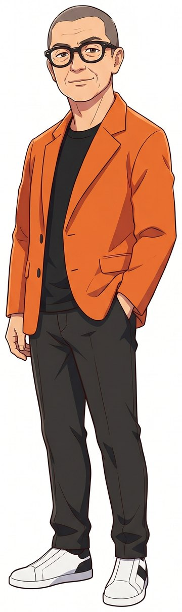
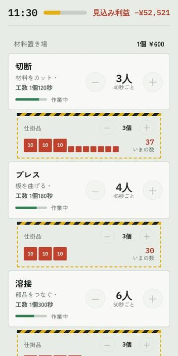
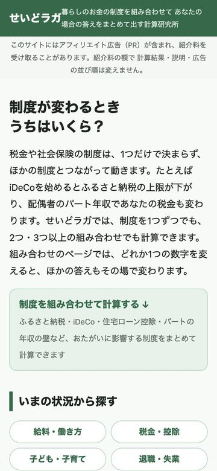
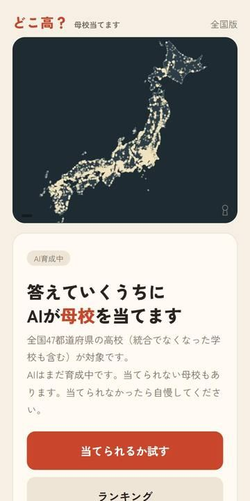
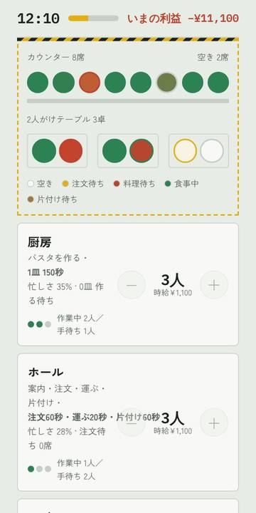
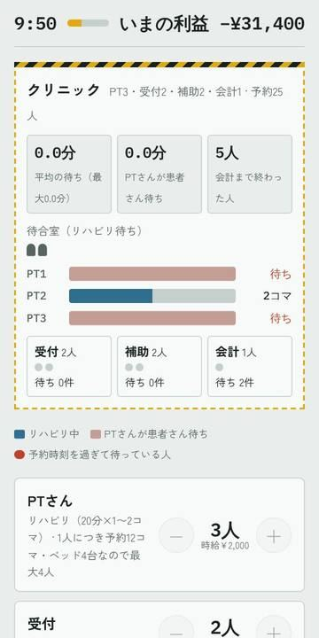

なぜ？ Mendomi Lab せいどラガ どこ高？ パスタ屋わかりにくいことを
遊びや計算で
自分でわかる形に
しています。
高木 務
たかぎ つとむ
※実物は イラストほどイケオジではありません
トヨタの元管理職に トヨタ生産方式を教えてきた人です。
経験でしか伝わらなかったものを 言葉で伝わる形にするのが いちばんの強みです。
得意なこと
- わかりにくいことを わかる形にすること
- 「そういうもんだ」「いままでそうだった」を判断に入れずに 前提から考えなおすこと
- 何が問題でどうしたら改善できるのかを 相手と一緒に考えること
01
作っているもの
RUNブラウザですぐ使えます。登録はいりません。

Mendomi Lab
造りすぎや人の配置のムダを ゲームで体験して学べます。研修でも使えます。
見てみる →
せいどラガ
年収の壁やふるさと納税が「うちの場合」いくらになるか 計算できます。
計算してみる →
どこ高？
質問に答えると AIが出身高校を当てます。全国約5000校が対象です。
遊ばれた数 925回当たった学校 608校
遊んでみる →

回らないパスタ屋
お昼のパスタ屋で 何人いればいちばん儲かるかを 試せるゲームです。
遊んでみる →
待たせないリハビリ室
待ち時間がなぜ生まれるのかを 動かして確かめられます。
動かしてみる →02
大事にしていること
RUN「なぜ」から始めます。
「そういうもんだ」で終わらせず 理由まで 一緒に考えます。
人より しくみを見ます。
うまくいかないとき 人を責めずに しくみを見直します。
決めるのは あなたです。
無理におすすめはしません。試してみて 合うかどうかを決めてください。